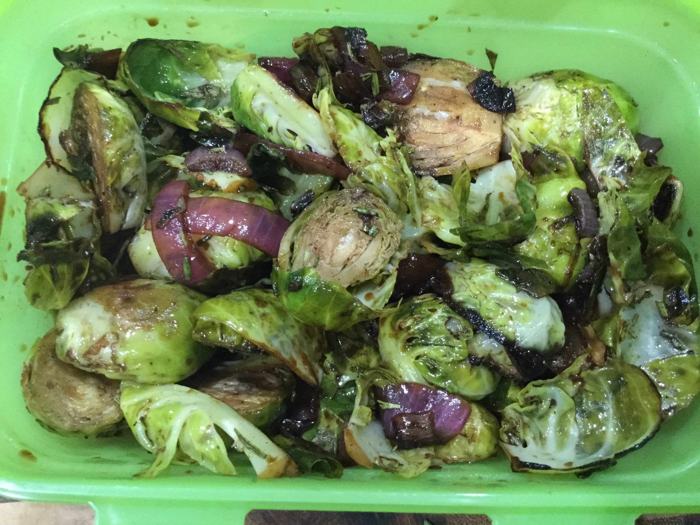

Balsamic-Glazed Brussels Sprouts
A tasty way to serve Brussels sprouts.
Ingredients
- 1 (16 ounce) package fresh Brussels sprouts
- 1 small red onion, thinly sliced
- 5 tablespoons olive oil, divided
- ¼ teaspoon salt
- ¼ teaspoon freshly ground black pepper
- 1 shallot, chopped
- ¼ cup balsamic vinegar
- 1 tablespoon chopped fresh rosemary
Steps
- Preheat oven to 425 degrees F (220 degrees C). Lightly grease a baking sheet.
- Combine Brussels sprouts and onion together in a bowl; add 3 tablespoons olive oil, salt, and pepper and gently toss to coat. Spread sprouts mixture onto the prepared baking sheet.
- Bake in the preheated oven until sprouts and onion are tender and caramelized, 25 to 30 minutes.
- Heat remaining 2 tablespoons olive oil in a small skillet over medium-high heat; saute shallot until tender, about 5 minutes. Add balsamic vinegar and cook until glaze is slightly reduced, about 5 minutes. Stir rosemary into glaze and pour over sprouts mixture.